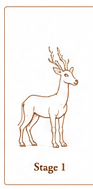
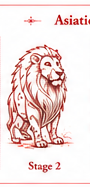
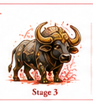
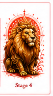

Born in Lines — Earned in Colour — Crowned in Glory
In the world of Hulmane-The-Saga, every child born in a kingdom carries the complete form of their sacred beast from their very first breath — etched as pure golden lines on the right shoulder. The animal is always whole. What changes across a lifetime is not how much of the beast is shown, but how deeply it is lived: plain lines at birth, bolder lines at ten, full colour at twenty, and the royal glorification at thirty — for those who truly earn it.
The sacred beast does not grow on the warrior's skin piece by piece. It appears whole — complete — the moment a child is born. What changes across a lifetime is not how much of the beast is shown, but how deeply it is felt. Plain lines at birth. Deeper form at the first trial. Colour at achievement. And finally — at the height of a life truly lived — the full glory of a legend.

The moment a child draws their first breath, the complete form of their kingdom's sacred beast appears on the right shoulder. Not a footprint. Not a fragment. The full animal — every outline, every curve, every detail of its form — etched in pure, clean lines. No fill. No colour. Just the animal rendered in golden strokes as thin and precise as the edge of a blade.
It is not painful. Mothers say it appears silently in the first hour of life, as if the kingdom itself leaned down and pressed its seal into the child. The lines are faint at first — almost like a watermark — and grow slightly more defined over the first three days. Then they settle, permanent, waiting.
"Every child born in Bharata carries the full truth of their kingdom from the very first breath. The lines tell you what they are. Life will tell you how deeply they mean it."
— Elder Vasundhara, Keeper of the First Marks

At the age of ten, every child in the kingdom faces their first great trial — a test set by the elders, unique to each kingdom, impossible to fake. It may be a feat of endurance, a test of knowledge, a night alone in the forest, or an act of courage for a stranger. Whatever form it takes, the child knows it when it comes. And so does the tattoo.
When the trial is complete, the thin birth lines deepen. They do not spread — the same full beast remains in the same position. But the lines thicken and multiply. New detail appears: the texture of fur, the weight of muscle, the set of the jaw, the angle of the eye. The beast is no longer a sketch. It has become a portrait. Still no colour — just richer, bolder lines that carry the memory of what was endured.
"The lines do not reveal more of the beast — they reveal more of you. After the trial, your animal finally knows who is carrying it."
— Simhavikrama of Gujarat, to his apprentices

The third awakening does not come from a single act of violence or a single great victory. It comes from a life beginning to accumulate meaning — a first true leadership, a sacrifice that cost something real, a reputation earned not just in one's own village but beyond it. No warrior under twenty has ever received this mark. Some wait until twenty-five. A few, thirty. But always, it arrives without warning and without pain.
The morning it happens, the warrior wakes to find colour flooding their tattoo. Not gradually — completely. The beast's true colour fills every line at once, as vivid and alive as the animal itself. Each sacred beast has its own palette: the lion glows amber-gold, the elephant shimmers violet-silver, the blackbuck burns river-gold. The warrior's skin becomes a living painting. They are no longer a child of the kingdom. They are a voice of it.
"I woke before dawn and thought I had fallen asleep beside a fire. The light was coming from my own shoulder. I lay still for an hour, watching it, afraid if I moved it would leave. It did not leave."
— Meghanadi of Meghalaya, from her journals

There is no test for this. No elder can grant it. No ritual can summon it. The fourth and final stage comes only when a warrior has truly become the kingdom — not in one great moment, but across years of dharma, sacrifice, courage, and love. Most warriors never receive it. Those who do describe it not as a transformation but as a recognition. The tattoo finally agrees with what everyone around the warrior has known for some time.
When the glorification arrives, the tattoo blazes. A royal mandala forms around the beast as if the kingdom itself drew a crown. The colours deepen beyond what colour normally is — a living gold that shifts in light, warm in firelight, cool at dusk, blinding in sunlight. The lines that have been with the warrior since birth become edges of pure light. When they move in battle, the tattoo pulses. When they are still and at peace, it hums softly — a sound only they can hear, the voice of their sacred beast, finally at rest because it is finally home.
They do not become the kingdom's ruler. They become something older and harder to name: the kingdom's truth. The proof that their land produces souls equal to their stories.
"I am no longer just Simhavikrama. I am Gujarat. I am the Lion. Every wall I have ever built, every child I have ever taught, every enemy I have ever faced and every friend I have ever kept — it is all here now, in the light on my shoulder. I do not carry it. It carries me."
— Simhavikrama of Gujarat, upon receiving the Glorification at age 34
Every sacred beast is shown in full from birth — only the depth, colour, and glory change. Select an animal and journey through its four stages of ascension.
Select a sacred beast
above to begin
When a State Hero rises to lead an entire region, something extraordinary happens. The tattoos of every kingdom in that region merge with their own, creating a chimeric beast never before seen — a living testament to unified power.
No sorcery, no ritual, no amount of political power can accelerate the tattoo's growth. It responds only to genuine achievement recognized by the spiritual bond between warrior and beast. Frauds have tried — all have failed, often fatally.
The tattoo does not judge morality. A tyrant who conquers through fear earns their mark just as a benevolent leader who unites through love. The beast recognizes power, not virtue. This is why some of the most dangerous villains in Hulmane-The-Saga bear the Full Body mark.
When a State Hero falls, their tattoo dissolves into light and returns to the land. Within a generation, a new child is born whose Stage I lines glow more brightly than any other child's — the next potential champion, already recognised by the kingdom. The cycle never breaks.
From Stage III (The Colouring) onward, warriors report hearing their beast's voice in moments of extreme emotion — a sound felt in the bones, not the ears. By Stage IV (The Glorification), the bond is so deep that the warrior can temporarily channel their animal's nature — the lion's roar that silences armies, the elephant's memory that spans centuries, the leopard's stillness that makes them invisible to the eye.
Regional leaders who bear the combination tattoo gain immense power but also carry the burden of multiple beast-spirits. The voices of five or more animals can drive a lesser mind to madness. Only the strongest wills survive the merger, which is why regional leadership is so rare — and so feared.